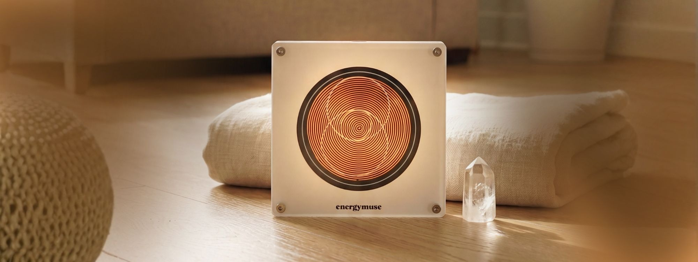
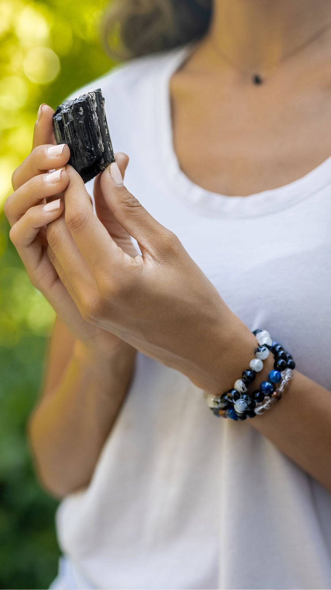
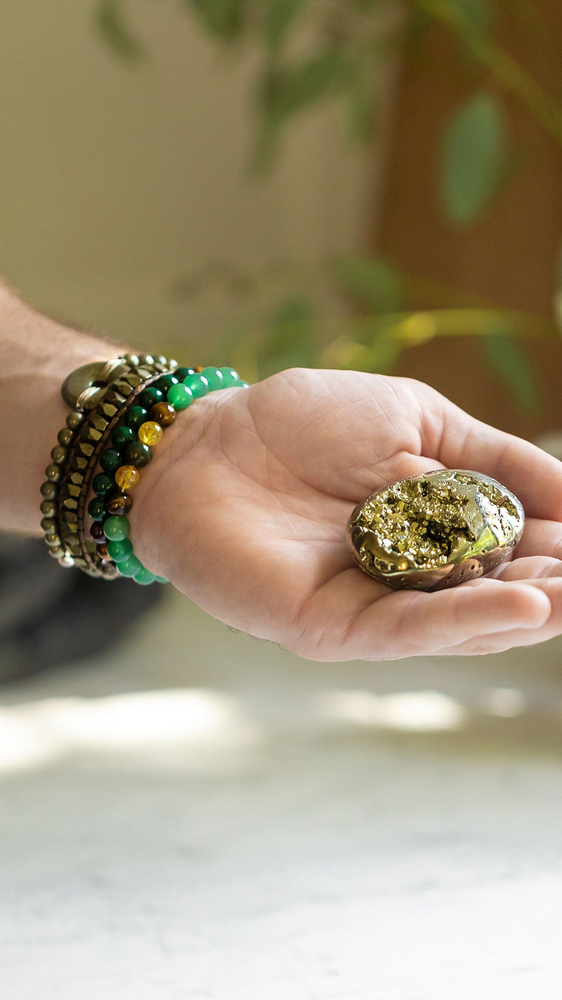
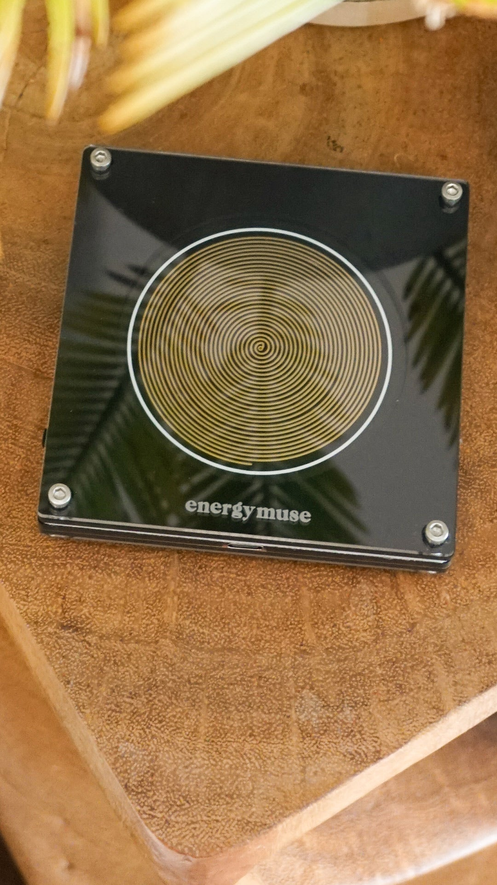
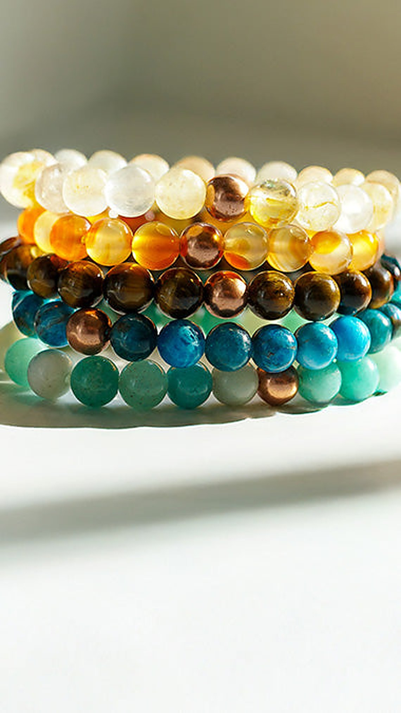
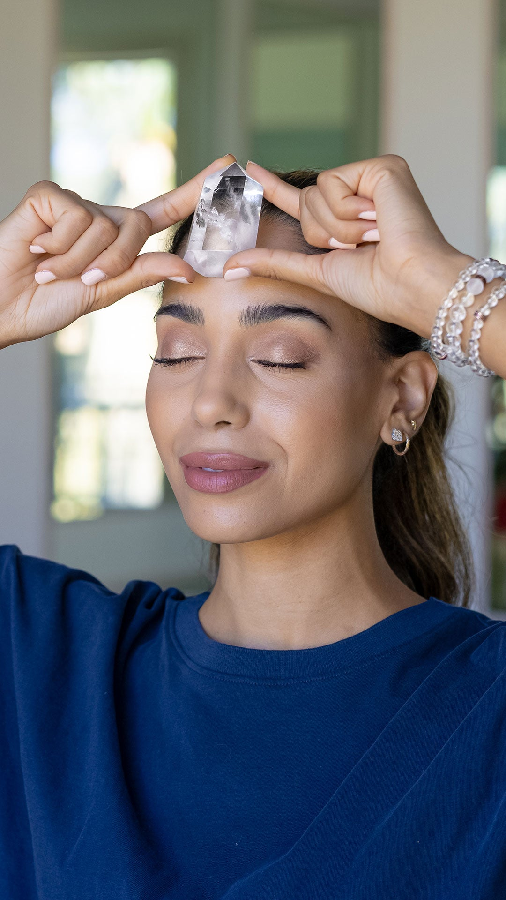
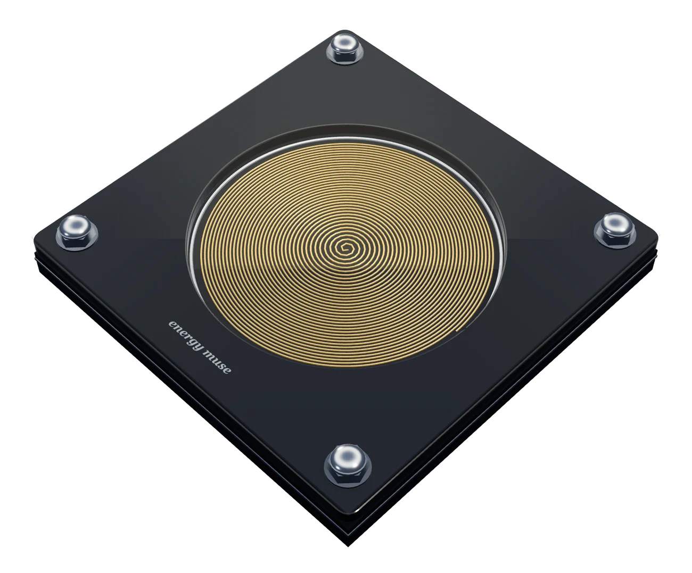
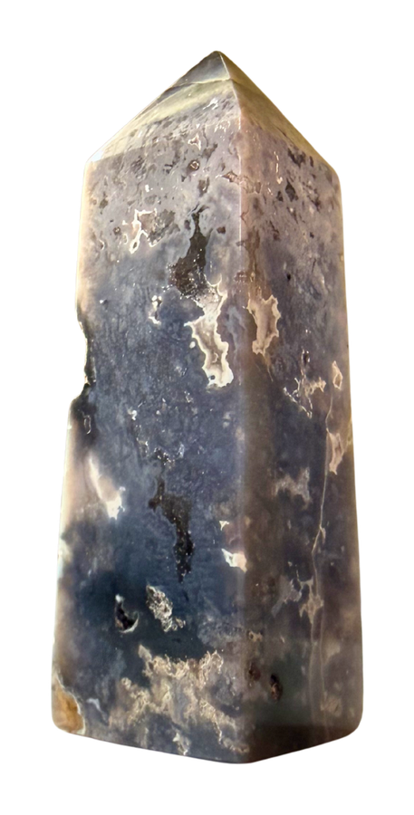
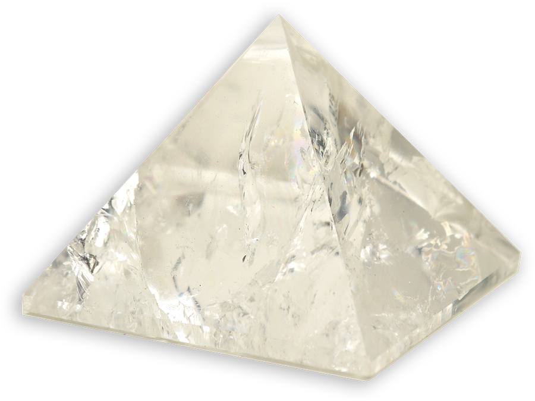

Tiger's Eye Diamond
Protection
$39.88

Choose your energy. Live in it.

BoundariesProtection
MomentumAbundance
SteadinessCalm
Heart-openingLove
FocusClarityIt starts as a frequency.
You can’t see it. You can absolutely feel the difference.
Frequency generators are not medical devices and are not a substitute for healthcare. Experiences vary.
Choose your energy. Live in it.

Frequency, made simple. Precision-crafted devices, tuned to specific frequencies.
Not medical devices; not a substitute for healthcare. Experiences vary.
The same tuned coil, in a hand‑finished copper body built to be left out.


A short note on what to work with — and first access to new releases.